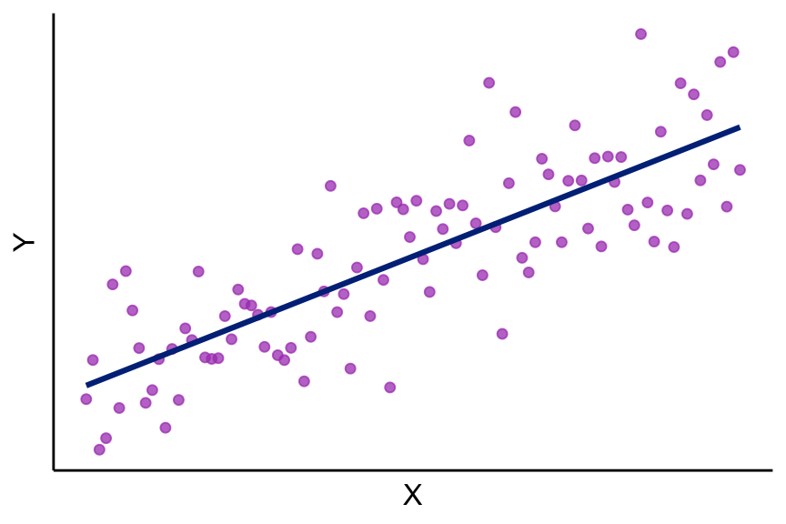
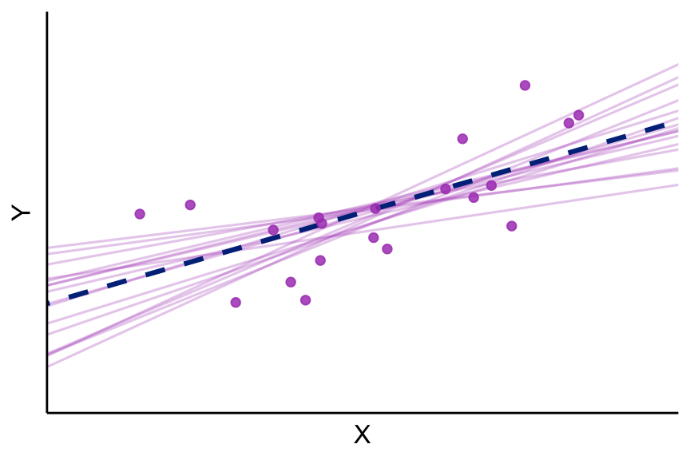

![Scatter plot illustrating the population regression model. A line labeled β₁+β₂x passes through the conditional mean E[Y|X=x] (diamond marker) at the value X=x. Individual conditional values Y|X are scattered as dots around the line. At the highlighted value X=x, a dashed vertical line separates points above the line, labeled u greater than 0, from points below it, labeled u less than 0, showing that the error term u is the deviation of each Y|X observation from its conditional mean.](L6_files/figure-html/fig-cond-values-1.png)
ECN 102: Analysis of Economics Data
Chapter 6: The Least Squares Estimator
Introduction to the Population Model
Previously, we have estimated a regression line for our sample of data, \(\hat{y}=b_1+b_2x\). However, we want to use this sample estimation to say something about the larger (unobserved) population our sample comes from.
Typically, we are interested in learning about the slope coefficient \(b_2\): how \(Y\) changes when \(X\) changes. To do this, we need to impose more structure onto our bivariate regression analysis.
Conditional Mean and Conditional Values of Y
We wish to model the true population relationship between X and Y, what we could estimate if we could observe the entire population. Doing this would let us calculate \(\boldsymbol{E[Y|X=x]}\), the conditional expected value of Y, for each value of X.
We would also be able to observe \(\boldsymbol{Y|X=x}\), the conditional values of Y for each value of X.
Population Model: Linearity Assumption
The first structure we put on our bivariate linear regression is that the conditional expected value of Y (or conditional mean) is equal to: \[E[Y|X=x] = \beta_1+\beta_2x\]
This assertion means that the relationship between X and Y is truly linear and that our sample estimates \(b_1,b_2\) are estimators for \(\beta_1,\beta_2\).
The Error Term in the Population Model
Just like our sample regression line, we do not assume that X can always perfectly predict Y (or, that our data points always lie on the line \(\beta_1+\beta_2x\)). Instead, we introduce an error term into the above regression, to allow noise in our population relationship:
\[E[Y|X=x]=\beta_1+\beta_2x+\boldsymbol{u}\]
Importantly, however, this error term is not a residual that we aim to minimize — it is the true noise or disturbance in the relationship between X and Y. Like our true population model, this true error term is unobserved.
Zero Conditional Mean of the Error Term
For any individual value of X, we assume that our error term may be positive or negative. In expectation, however, we assume that the conditional mean of the error is zero:
\[E[u|x]=0\]
Alternatively, this means we are assuming:
\[E[y|x]=\beta_1+\beta_2x\]
Graphical Representation: Y|X vs. E[Y|X]
Variance of Y|X and Homoskedasticity
Since \(u\) is the difference between \(Y\) and \(Y|X\), it follows that \[Var[y|x]=Var[u|x]\]
In the simplest case, we assume that the variance of our error term (“skedasticity”) is constant across all possible values of X: \[\sigma^2_u=Var[u|x]\]
Constant errors across x we refer to as homoskedasticity. Non-constant errors across x we call heteroskedasticity.
Graphical Representation: Skedasticity
Homoskedasticity:

Heteroskedasticity:

Conditional Distribution of Y: Summary
Taken together, these assumptions give us: \[(Y|X=x_i)\sim(\beta_1+\beta_2x_i,\sigma^2_u)\]
“The random variable for conditional values \(Y|X=x_i\) is distributed with population mean \(\beta_1+\beta_2x_i\) and population variance \(\sigma^2_u\) (if I have errors that are constant across x and conditional mean zero)”.
Four Assumptions for Linear Regression
We can formalize these four assumptions for linear regression:
Linearity: our true population model is linear in X
The population model is \(y_i=\beta_1+\beta_2x_i+u_i\) for all \(i\)
. . .
Unbiasedness: the conditional mean of the error term is zero
\(E[u_i|x_i]=0\) for all \(i\)
. . .
Homoskedasticity: error term has constant variance across \(X\)
\(Var[u_i|x_i]=\sigma^2_u\) for all \(i\)
. . .
Independence: error terms for different observations do not affect each other
\(u_i \perp \!\!\! \perp u_j\) for all \(i\neq j\)
What the Four Assumptions Give Us
What can we do with these assumptions?
Assumptions (1) + (2) allow us to say that \(E[b_2]=\beta_2\).
Assumptions (3) + (4)1 allow us to say that \(\sigma^2_{b_2}=\frac{\sigma^2_u}{\sum_{i=1}^n(x_i-\bar{x})^2}\)
Finally, our CLT says that our computed statistic will be normally distributed whenever \(n>30\).
Asymptotic Normality of the OLS Estimator
All together, these assumptions give us:
\[b_2\sim N(\beta_2,\sigma^2_{b_2})\text{ with }n>30\]
Standardizing \(b_2\) yields:
\[\frac{b_2-\beta_2}{\sigma_{b_2}}\sim N(0,1)\]
\(b_2\) is asymptotically normally distributed, just like we showed for \(\bar{x}\). Like with our standardized \(\bar{x}\), we can now do hypothesis testing on our estimated \(b_2\) coefficient.
Unbiasedness and Consistency of OLS
We can claim that our OLS estimator \(b_2\) is both unbiased and consistent under these four population assumptions: \[\underbrace{E[b_2]=\beta_2}_{\text{Unbiased}}\text{ and }\underbrace{\sigma^2_{b_2}=\frac{\sigma^2_u}{\sum_{i=1}^{\boldsymbol{n}}(x_i-\bar{x})^2}\rightarrow0\text{ as }n\rightarrow\infty}_{\text{Consistent}}\]
![Density plot showing three bell-shaped sampling distribution curves. Two blue curves are centered at β₂, the true parameter value marked by a dashed vertical line: a wide, flat long-dashed curve for the OLS estimator at small n, and a tall, narrow solid curve for OLS at large n, illustrating that OLS is unbiased at all sample sizes and consistent as n increases. A purple curve centered to the right of β₂ represents a biased estimator whose distribution does not converge to the true value. The horizontal axis shows the estimator value and the vertical axis shows sampling density.](L6_files/figure-html/fig-ols-properties-1.png)
OLS is BLUE: Best Linear Unbiased Estimator
We also call OLS BLUE: the Best Linear Unbiased Estimator:
best means that OLS has the minimum variance of all estimators in its class (not proven2 in class)
linear means our assumed population model that we are estimating is linear
unbiased means our conditional error term is mean zero
estimator because we are estimating \(\beta_2\) with \(b_2\)
Standard Error of the Slope Coefficient
Since we do not actually observe \(u\) and thus do not know \(\sigma^2_u\), however, we replace \(\sigma^2_u\) with \(s^2_e\) and take a square root to get: \[s_{b_2}=\frac{s_e}{\sqrt{\sum_{i=1}^n(x_i-\bar{x})^2}}\]
This is our standard error of \(b_2\), an estimator for the unknown population standard deviation of \(b_2\). Notice this uses \(s_e\), the standard error of our residual/regression or RMSE, in its numerator, meaning our model fit has a direct impact on the precision of our estimator \(b_2\).
Precision of the Slope Estimator
Given our standard error for \(b_2\) above, we observe circumstances under which our slope coefficient \(\beta_2\) will be more precisely estimated (or when our standard error of \(b_2\) will be smaller): \[s_{b_2}=\frac{s_e}{\sqrt{\sum_{i=1}^n(x_i-\bar{x})^2}}\]
When our model fits better (\(s_e\) decreases) \(\Rightarrow\) numer. \(\downarrow\)
When our sample size (\(n\)) increases \(\Rightarrow\) denom. \(\sum_{i=1}^n \uparrow\)
When our regressor is more widely scattered/spread out relative to its mean \(\Rightarrow\) denom. \(\sum_i(x_i-\bar{x})^2\uparrow\)
Graphical Representation: Scattered vs. Clustered Data
Clustered regressors (imprecise):

Scattered regressors (precise):

Threats to the Regression Assumptions
How can we deal with threats to these four population regression assumptions? Do our statistics fall apart if these fail?
Assumption Violation 1: Linearity
- Linearity is violated:
Nonlinearity can be accommodated by least squares regressions to allow for quadratic or other such relationships. This will affect how we estimate our coefficients but will not shut down estimation. We will see examples of fitting nonlinear sample regression models in later chapters, such as \(y=\beta_1+\beta_2x+\beta_3x^2+u\) or a quadratic model.
Assumption Violation 2: Unbiasedness
- Unbiasedness is violated:
Bias is a serious problem for estimation and requires careful consideration to tackle properly. We say that a regression is biased when its error term is correlated with its regressor: \(Cov[u_i,x_i]\neq0\). We can try to get around this by adding missing variables into the regression, or changing our regression specification around this bias, but this remains a concern.
Assumption Violation 3: Homoskedasticity
- Homoskedasticity is violated:
Heteroskedasticity, or errors that vary in magnitude with x, can be accommodated by using robust standard errors. This is a relatively easy correction in Stata (or any program) that adjusts our residuals with the magnitude of \(X\) to avoid potential heteroskedasticity.
You are not responsible for the robust standard error formula. Broadly, however, we expect it to undo the problematic \(f(x)\) making our errors heteroskedastic: \(f(x)\sigma^2_u\) (with \(f'(x)>0\) or \(f'(x)<0\))
Assumption Violation 4: Independence
- Independence is violated:
Error dependence, or observations influencing the error term of other observations, is common in times series models, where US GDP this year is highly correlated with US GDP last year. We have relatively easy methods to account for this autocorrelation.
We also may see errors correlated across units of observation (in cross-sectional or panel data) and will see a method in later chapters for dealing with such error dependence. Like robust standard errors, this will also be relatively simple to implement.
End of Lecture Material
Knowledge Check 6
For the following pairs of scenarios, state for which you would expect \(\beta_2\) to be more precisely estimated and why:
\(n=45\) vs. \(n=100\)
The regressor ranges from 10 to 20 vs. from 10 to 50
The standard error of the regression \(s_e=2\) vs. \(s_e=9\)